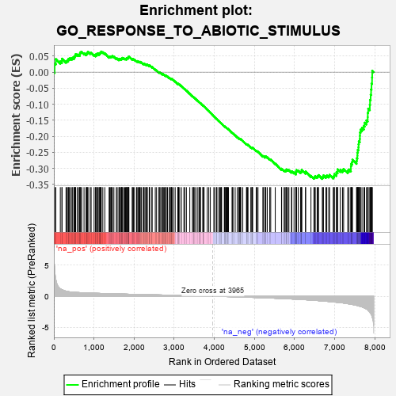

| | | Dataset | 7d |
| Phenotype | NoPhenotypeAvailable |
| Upregulated in class | na_neg |
| GeneSet | GO_RESPONSE_TO_ABIOTIC_STIMULUS |
| Enrichment Score (ES) | -0.3328735 |
| Normalized Enrichment Score (NES) | -1.156873 |
| Nominal p-value | 0.15541922 |
| FDR q-value | 0.68772984 |
| FWER p-Value | 1.0 |
Table: GSEA Results Summary

Fig 1: Enrichment plot: GO_RESPONSE_TO_ABIOTIC_STIMULUS
Profile of the Running ES Score & Positions of GeneSet Members on the Rank Ordered List
| PROBE | GENE SYMBOL | GENE_TITLE | RANK IN GENE LIST | RANK METRIC SCORE | RUNNING ES | CORE ENRICHMENT | | 1 | H2AX | | | 20 | 4.738 | 0.0276 | No |
| 2 | TGFB3 | | | 49 | 2.654 | 0.0408 | No |
| 3 | CSRP3 | | | 161 | 1.186 | 0.0339 | No |
| 4 | BCL3 | | | 202 | 1.047 | 0.0354 | No |
| 5 | SWI5 | | | 203 | 1.045 | 0.0421 | No |
| 6 | RGR | | | 303 | 0.814 | 0.0344 | No |
| 7 | NUP85 | | | 329 | 0.772 | 0.0360 | No |
| 8 | ARNT | | | 357 | 0.741 | 0.0373 | No |
| 9 | HUS1 | | | 362 | 0.735 | 0.0414 | No |
| 10 | BAX | | | 387 | 0.711 | 0.0428 | No |
| 11 | RAD9A | | | 418 | 0.681 | 0.0433 | No |
| 12 | ERCC1 | | | 453 | 0.660 | 0.0430 | No |
| 13 | WRN | | | 469 | 0.649 | 0.0452 | No |
| 14 | MYOD1 | | | 504 | 0.628 | 0.0448 | No |
| 15 | NUP54 | | | 505 | 0.627 | 0.0488 | No |
| 16 | HTRA2 | | | 527 | 0.621 | 0.0500 | No |
| 17 | PKN1 | | | 535 | 0.619 | 0.0530 | No |
| 18 | SRF | | | 542 | 0.615 | 0.0562 | No |
| 19 | CCNB1 | | | 581 | 0.601 | 0.0551 | No |
| 20 | KCND2 | | | 617 | 0.590 | 0.0543 | No |
| 21 | NOC2L | | | 647 | 0.578 | 0.0542 | No |
| 22 | RBM4 | | | 649 | 0.576 | 0.0577 | No |
| 23 | EYS | | | 654 | 0.575 | 0.0609 | No |
| 24 | PLOD1 | | | 670 | 0.570 | 0.0625 | No |
| 25 | XRCC6 | | | 694 | 0.560 | 0.0631 | No |
| 26 | ELK1 | | | 752 | 0.545 | 0.0592 | No |
| 27 | BLM | | | 804 | 0.531 | 0.0559 | No |
| 28 | RPA1 | | | 817 | 0.527 | 0.0577 | No |
| 29 | RAE1 | | | 827 | 0.524 | 0.0599 | No |
| 30 | RFWD3 | | | 843 | 0.521 | 0.0612 | No |
| 31 | RPA2 | | | 851 | 0.519 | 0.0636 | No |
| 32 | STOX1 | | | 905 | 0.506 | 0.0600 | No |
| 33 | PDE1B | | | 929 | 0.500 | 0.0602 | No |
| 34 | MEN1 | | | 1003 | 0.483 | 0.0537 | No |
| 35 | AKT1 | | | 1040 | 0.476 | 0.0521 | No |
| 36 | YAP1 | | | 1041 | 0.475 | 0.0551 | No |
| 37 | XPA | | | 1070 | 0.469 | 0.0545 | No |
| 38 | AIFM1 | | | 1072 | 0.469 | 0.0573 | No |
| 39 | RAD51 | | | 1090 | 0.466 | 0.0581 | No |
| 40 | NUP93 | | | 1127 | 0.459 | 0.0563 | No |
| 41 | SRC | | | 1128 | 0.459 | 0.0592 | No |
| 42 | PSMD7 | | | 1152 | 0.454 | 0.0591 | No |
| 43 | NUP43 | | | 1160 | 0.453 | 0.0611 | No |
| 44 | ERCC3 | | | 1173 | 0.451 | 0.0624 | No |
| 45 | PSMD2 | | | 1181 | 0.450 | 0.0644 | No |
| 46 | RBBP7 | | | 1220 | 0.443 | 0.0622 | No |
| 47 | FNTB | | | 1270 | 0.436 | 0.0587 | No |
| 48 | DRGX | | | 1378 | 0.414 | 0.0474 | No |
| 49 | FKBP4 | | | 1390 | 0.412 | 0.0486 | No |
| 50 | P2RY1 | | | 1416 | 0.407 | 0.0479 | No |
| 51 | NUP88 | | | 1429 | 0.404 | 0.0489 | No |
| 52 | RBX1 | | | 1445 | 0.401 | 0.0495 | No |
| 53 | VASN | | | 1459 | 0.398 | 0.0504 | No |
| 54 | UVSSA | | | 1496 | 0.391 | 0.0482 | No |
| 55 | DDHD2 | | | 1557 | 0.381 | 0.0428 | No |
| 56 | SDE2 | | | 1579 | 0.378 | 0.0425 | No |
| 57 | N4BP1 | | | 1622 | 0.370 | 0.0394 | No |
| 58 | CDK4 | | | 1626 | 0.370 | 0.0413 | No |
| 59 | DDB1 | | | 1642 | 0.366 | 0.0417 | No |
| 60 | BACE1 | | | 1673 | 0.360 | 0.0401 | No |
| 61 | ELOC | | | 1685 | 0.359 | 0.0410 | No |
| 62 | HYOU1 | | | 1692 | 0.358 | 0.0425 | No |
| 63 | ERCC8 | | | 1699 | 0.357 | 0.0440 | No |
| 64 | ERCC2 | | | 1712 | 0.354 | 0.0447 | No |
| 65 | MRNIP | | | 1743 | 0.346 | 0.0430 | No |
| 66 | LRP5 | | | 1769 | 0.342 | 0.0419 | No |
| 67 | NUP58 | | | 1787 | 0.340 | 0.0419 | No |
| 68 | PSMD4 | | | 1811 | 0.335 | 0.0410 | No |
| 69 | FMR1 | | | 1816 | 0.334 | 0.0426 | No |
| 70 | MSH2 | | | 1819 | 0.334 | 0.0445 | No |
| 71 | GATA4 | | | 1837 | 0.330 | 0.0444 | No |
| 72 | NFAT5 | | | 1856 | 0.326 | 0.0441 | No |
| 73 | PSMD6 | | | 1858 | 0.326 | 0.0460 | No |
| 74 | SMAD4 | | | 1860 | 0.326 | 0.0480 | No |
| 75 | NUP62 | | | 1871 | 0.324 | 0.0487 | No |
| 76 | MICU1 | | | 1954 | 0.313 | 0.0401 | No |
| 77 | CCR4 | | | 1959 | 0.312 | 0.0415 | No |
| 78 | POLH | | | 1983 | 0.307 | 0.0405 | No |
| 79 | RAF1 | | | 2011 | 0.303 | 0.0389 | No |
| 80 | MEIS2 | | | 2063 | 0.296 | 0.0342 | No |
| 81 | KCNC2 | | | 2075 | 0.295 | 0.0346 | No |
| 82 | BMP7 | | | 2107 | 0.290 | 0.0324 | No |
| 83 | INO80 | | | 2120 | 0.288 | 0.0327 | No |
| 84 | PSME4 | | | 2143 | 0.285 | 0.0317 | No |
| 85 | DTL | | | 2154 | 0.284 | 0.0322 | No |
| 86 | UBE2A | | | 2183 | 0.278 | 0.0303 | No |
| 87 | WTIP | | | 2228 | 0.272 | 0.0263 | No |
| 88 | CREB1 | | | 2243 | 0.269 | 0.0262 | No |
| 89 | PSMF1 | | | 2251 | 0.268 | 0.0270 | No |
| 90 | XRCC1 | | | 2287 | 0.262 | 0.0241 | No |
| 91 | REST | | | 2308 | 0.259 | 0.0232 | No |
| 92 | UBE4B | | | 2313 | 0.258 | 0.0243 | No |
| 93 | SEC13 | | | 2330 | 0.256 | 0.0239 | No |
| 94 | PPID | | | 2376 | 0.249 | 0.0196 | No |
| 95 | SLU7 | | | 2382 | 0.248 | 0.0205 | No |
| 96 | HIPK2 | | | 2389 | 0.247 | 0.0213 | No |
| 97 | FEN1 | | | 2446 | 0.237 | 0.0155 | No |
| 98 | KDM1A | | | 2447 | 0.237 | 0.0170 | No |
| 99 | RAD1 | | | 2528 | 0.223 | 0.0081 | No |
| 100 | PSMD5 | | | 2560 | 0.218 | 0.0054 | No |
| 101 | BAG3 | | | 2620 | 0.209 | -0.0009 | No |
| 102 | NUP50 | | | 2625 | 0.209 | -0.0001 | No |
| 103 | KAT5 | | | 2644 | 0.206 | -0.0011 | No |
| 104 | WDR83 | | | 2669 | 0.203 | -0.0030 | No |
| 105 | CLPB | | | 2706 | 0.198 | -0.0064 | No |
| 106 | PHB2 | | | 2712 | 0.197 | -0.0058 | No |
| 107 | RORA | | | 2730 | 0.193 | -0.0068 | No |
| 108 | FNTA | | | 2755 | 0.190 | -0.0087 | No |
| 109 | SCFD1 | | | 2783 | 0.185 | -0.0110 | No |
| 110 | AQP3 | | | 2796 | 0.184 | -0.0114 | No |
| 111 | ATR | | | 2800 | 0.183 | -0.0106 | No |
| 112 | RIC8A | | | 2833 | 0.179 | -0.0136 | No |
| 113 | CIRBP | | | 2876 | 0.170 | -0.0180 | No |
| 114 | CUL2 | | | 2882 | 0.169 | -0.0176 | No |
| 115 | RBM4B | | | 2918 | 0.163 | -0.0211 | No |
| 116 | ERO1A | | | 2925 | 0.162 | -0.0208 | No |
| 117 | CLCN7 | | | 2931 | 0.161 | -0.0205 | No |
| 118 | NMT2 | | | 2947 | 0.158 | -0.0214 | No |
| 119 | ANO1 | | | 2982 | 0.152 | -0.0249 | No |
| 120 | BRCA2 | | | 3024 | 0.146 | -0.0293 | No |
| 121 | CHP1 | | | 3089 | 0.138 | -0.0367 | No |
| 122 | TIGAR | | | 3091 | 0.138 | -0.0360 | No |
| 123 | REV1 | | | 3104 | 0.136 | -0.0367 | No |
| 124 | GPX1 | | | 3109 | 0.135 | -0.0363 | No |
| 125 | OGG1 | | | 3135 | 0.132 | -0.0387 | No |
| 126 | PSMD9 | | | 3179 | 0.125 | -0.0435 | No |
| 127 | ELOB | | | 3241 | 0.114 | -0.0507 | No |
| 128 | NUP98 | | | 3261 | 0.112 | -0.0525 | No |
| 129 | SMAD3 | | | 3303 | 0.105 | -0.0571 | No |
| 130 | DDX3X | | | 3388 | 0.091 | -0.0675 | No |
| 131 | PTPRK | | | 3454 | 0.084 | -0.0754 | No |
| 132 | LDHA | | | 3479 | 0.080 | -0.0780 | No |
| 133 | CDK5 | | | 3480 | 0.080 | -0.0775 | No |
| 134 | XPC | | | 3509 | 0.076 | -0.0806 | No |
| 135 | PIN1 | | | 3543 | 0.069 | -0.0845 | No |
| 136 | MAPK3 | | | 3589 | 0.062 | -0.0900 | No |
| 137 | CBL | | | 3621 | 0.056 | -0.0936 | No |
| 138 | NOLC1 | | | 3623 | 0.056 | -0.0934 | No |
| 139 | SPRTN | | | 3651 | 0.051 | -0.0966 | No |
| 140 | FIS1 | | | 3654 | 0.051 | -0.0965 | No |
| 141 | NF1 | | | 3713 | 0.040 | -0.1038 | No |
| 142 | HSF1 | | | 3718 | 0.039 | -0.1041 | No |
| 143 | DAXX | | | 3722 | 0.038 | -0.1042 | No |
| 144 | HTR1B | | | 3745 | 0.035 | -0.1069 | No |
| 145 | WDR47 | | | 3823 | 0.023 | -0.1167 | No |
| 146 | LZIC | | | 3862 | 0.018 | -0.1216 | No |
| 147 | NIPBL | | | 3900 | 0.010 | -0.1263 | No |
| 148 | EYA1 | | | 3987 | -0.006 | -0.1374 | No |
| 149 | PARP1 | | | 4014 | -0.010 | -0.1408 | No |
| 150 | DDAH1 | | | 4056 | -0.016 | -0.1460 | No |
| 151 | SFRP2 | | | 4065 | -0.018 | -0.1469 | No |
| 152 | MTOR | | | 4114 | -0.025 | -0.1530 | No |
| 153 | MSH6 | | | 4129 | -0.028 | -0.1546 | No |
| 154 | WNK3 | | | 4153 | -0.034 | -0.1574 | No |
| 155 | TBL2 | | | 4175 | -0.038 | -0.1599 | No |
| 156 | FMO1 | | | 4181 | -0.038 | -0.1603 | No |
| 157 | LRP11 | | | 4250 | -0.050 | -0.1688 | No |
| 158 | RPTOR | | | 4252 | -0.050 | -0.1686 | No |
| 159 | PSME3 | | | 4280 | -0.056 | -0.1718 | No |
| 160 | WNT11 | | | 4282 | -0.056 | -0.1716 | No |
| 161 | USF1 | | | 4296 | -0.059 | -0.1729 | No |
| 162 | BAG4 | | | 4314 | -0.061 | -0.1747 | No |
| 163 | STAC | | | 4327 | -0.064 | -0.1758 | No |
| 164 | OPA1 | | | 4330 | -0.065 | -0.1757 | No |
| 165 | ADRB2 | | | 4352 | -0.068 | -0.1780 | No |
| 166 | REEP6 | | | 4441 | -0.084 | -0.1889 | No |
| 167 | NDRG1 | | | 4456 | -0.085 | -0.1902 | No |
| 168 | ERCC6 | | | 4464 | -0.087 | -0.1905 | No |
| 169 | NPTN | | | 4519 | -0.098 | -0.1969 | No |
| 170 | PNKP | | | 4572 | -0.111 | -0.2030 | No |
| 171 | SMC1A | | | 4609 | -0.120 | -0.2069 | No |
| 172 | GATA3 | | | 4614 | -0.120 | -0.2066 | No |
| 173 | CLK2 | | | 4628 | -0.124 | -0.2075 | No |
| 174 | LETM1 | | | 4644 | -0.127 | -0.2087 | No |
| 175 | MYLK | | | 4651 | -0.128 | -0.2087 | No |
| 176 | ITPR1 | | | 4661 | -0.130 | -0.2090 | No |
| 177 | CPEB2 | | | 4709 | -0.141 | -0.2142 | No |
| 178 | TERT | | | 4801 | -0.157 | -0.2250 | No |
| 179 | PPM1D | | | 4805 | -0.158 | -0.2244 | No |
| 180 | CNN2 | | | 4828 | -0.163 | -0.2262 | No |
| 181 | TIPIN | | | 4839 | -0.166 | -0.2265 | No |
| 182 | TLK2 | | | 4909 | -0.179 | -0.2343 | No |
| 183 | CASP1 | | | 4932 | -0.185 | -0.2360 | No |
| 184 | EP300 | | | 4941 | -0.186 | -0.2359 | No |
| 185 | XRCC5 | | | 4946 | -0.187 | -0.2352 | No |
| 186 | PRKDC | | | 4955 | -0.189 | -0.2350 | No |
| 187 | PDPK1 | | | 5043 | -0.207 | -0.2450 | No |
| 188 | EFHD1 | | | 5057 | -0.211 | -0.2454 | No |
| 189 | DRD2 | | | 5088 | -0.221 | -0.2478 | No |
| 190 | ATM | | | 5210 | -0.249 | -0.2620 | No |
| 191 | GPR4 | | | 5219 | -0.250 | -0.2614 | No |
| 192 | SCN1A | | | 5260 | -0.261 | -0.2650 | No |
| 193 | PTEN | | | 5262 | -0.261 | -0.2634 | No |
| 194 | PICK1 | | | 5265 | -0.263 | -0.2620 | No |
| 195 | ERCC5 | | | 5284 | -0.268 | -0.2627 | No |
| 196 | CD9 | | | 5319 | -0.277 | -0.2653 | No |
| 197 | GRIN1 | | | 5381 | -0.291 | -0.2714 | No |
| 198 | ATOH7 | | | 5405 | -0.296 | -0.2725 | No |
| 199 | CERS1 | | | 5518 | -0.325 | -0.2850 | No |
| 200 | PSMD1 | | | 5674 | -0.367 | -0.3028 | No |
| 201 | CASP8 | | | 5678 | -0.369 | -0.3008 | No |
| 202 | PDCL3 | | | 5738 | -0.388 | -0.3060 | No |
| 203 | TLR2 | | | 5761 | -0.395 | -0.3064 | No |
| 204 | TRPC6 | | | 5784 | -0.401 | -0.3067 | No |
| 205 | RDH13 | | | 5797 | -0.405 | -0.3057 | No |
| 206 | ADA | | | 5798 | -0.405 | -0.3031 | No |
| 207 | ANXA7 | | | 5827 | -0.413 | -0.3041 | No |
| 208 | ATG7 | | | 5858 | -0.420 | -0.3053 | No |
| 209 | STK11 | | | 5922 | -0.443 | -0.3107 | No |
| 210 | CNGA1 | | | 5931 | -0.445 | -0.3089 | No |
| 211 | SCAP | | | 5986 | -0.466 | -0.3130 | No |
| 212 | HVCN1 | | | 6034 | -0.482 | -0.3160 | No |
| 213 | TRPC3 | | | 6035 | -0.483 | -0.3129 | No |
| 214 | RAC1 | | | 6036 | -0.484 | -0.3099 | No |
| 215 | POLK | | | 6041 | -0.486 | -0.3073 | No |
| 216 | NR2E3 | | | 6048 | -0.488 | -0.3050 | No |
| 217 | UBB | | | 6090 | -0.503 | -0.3071 | No |
| 218 | RNF8 | | | 6147 | -0.518 | -0.3111 | No |
| 219 | EGR1 | | | 6165 | -0.527 | -0.3099 | No |
| 220 | RAG1 | | | 6176 | -0.530 | -0.3078 | No |
| 221 | PSIP1 | | | 6177 | -0.531 | -0.3045 | No |
| 222 | HSBP1 | | | 6273 | -0.562 | -0.3132 | No |
| 223 | STK39 | | | 6274 | -0.563 | -0.3097 | No |
| 224 | HSPB8 | | | 6408 | -0.621 | -0.3230 | No |
| 225 | DYSF | | | 6481 | -0.654 | -0.3282 | Yes |
| 226 | DPP4 | | | 6501 | -0.663 | -0.3264 | Yes |
| 227 | TRPV4 | | | 6515 | -0.668 | -0.3239 | Yes |
| 228 | OTOP1 | | | 6562 | -0.690 | -0.3255 | Yes |
| 229 | CLN3 | | | 6580 | -0.699 | -0.3232 | Yes |
| 230 | TPR | | | 6597 | -0.709 | -0.3208 | Yes |
| 231 | PAK1 | | | 6691 | -0.757 | -0.3281 | Yes |
| 232 | EGFR | | | 6708 | -0.765 | -0.3253 | Yes |
| 233 | GSK3B | | | 6719 | -0.768 | -0.3217 | Yes |
| 234 | TRPM8 | | | 6781 | -0.800 | -0.3245 | Yes |
| 235 | NET1 | | | 6803 | -0.816 | -0.3220 | Yes |
| 236 | AEN | | | 6852 | -0.842 | -0.3229 | Yes |
| 237 | ABCA4 | | | 6872 | -0.851 | -0.3200 | Yes |
| 238 | DNM1L | | | 6963 | -0.913 | -0.3259 | Yes |
| 239 | PDE2A | | | 6985 | -0.927 | -0.3227 | Yes |
| 240 | NPHP4 | | | 6991 | -0.931 | -0.3174 | Yes |
| 241 | RNF34 | | | 7040 | -0.963 | -0.3175 | Yes |
| 242 | CTNS | | | 7044 | -0.965 | -0.3118 | Yes |
| 243 | OPN4 | | | 7072 | -0.978 | -0.3091 | Yes |
| 244 | CETN1 | | | 7073 | -0.978 | -0.3028 | Yes |
| 245 | WHRN | | | 7139 | -1.025 | -0.3048 | Yes |
| 246 | TSPO | | | 7194 | -1.065 | -0.3050 | Yes |
| 247 | CNGB1 | | | 7222 | -1.096 | -0.3015 | Yes |
| 248 | TRPM1 | | | 7324 | -1.197 | -0.3070 | Yes |
| 249 | PLAC8 | | | 7355 | -1.223 | -0.3031 | Yes |
| 250 | LOXL2 | | | 7403 | -1.269 | -0.3012 | Yes |
| 251 | GRM1 | | | 7404 | -1.272 | -0.2931 | Yes |
| 252 | UBC | | | 7410 | -1.274 | -0.2856 | Yes |
| 253 | KMO | | | 7432 | -1.308 | -0.2800 | Yes |
| 254 | CASP2 | | | 7442 | -1.322 | -0.2728 | Yes |
| 255 | TRPM3 | | | 7544 | -1.461 | -0.2766 | Yes |
| 256 | GRIK2 | | | 7552 | -1.471 | -0.2681 | Yes |
| 257 | XRRA1 | | | 7565 | -1.496 | -0.2602 | Yes |
| 258 | CALM1 | | | 7567 | -1.499 | -0.2508 | Yes |
| 259 | TTPA | | | 7575 | -1.516 | -0.2420 | Yes |
| 260 | SAXO1 | | | 7592 | -1.543 | -0.2343 | Yes |
| 261 | ASNS | | | 7595 | -1.547 | -0.2247 | Yes |
| 262 | BEST1 | | | 7601 | -1.554 | -0.2155 | Yes |
| 263 | TRPA1 | | | 7625 | -1.608 | -0.2082 | Yes |
| 264 | PKD1 | | | 7628 | -1.611 | -0.1982 | Yes |
| 265 | PDCD6 | | | 7630 | -1.615 | -0.1881 | Yes |
| 266 | TAF1 | | | 7643 | -1.633 | -0.1792 | Yes |
| 267 | TRPM2 | | | 7680 | -1.712 | -0.1730 | Yes |
| 268 | ASIC1 | | | 7726 | -1.838 | -0.1672 | Yes |
| 269 | CASP3 | | | 7747 | -1.902 | -0.1576 | Yes |
| 270 | NPHP1 | | | 7791 | -2.041 | -0.1502 | Yes |
| 271 | PKD2 | | | 7822 | -2.167 | -0.1403 | Yes |
| 272 | CLCA1 | | | 7824 | -2.171 | -0.1266 | Yes |
| 273 | KCNC1 | | | 7835 | -2.249 | -0.1136 | Yes |
| 274 | MMP2 | | | 7875 | -2.574 | -0.1023 | Yes |
| 275 | FYN | | | 7881 | -2.622 | -0.0863 | Yes |
| 276 | CAV3 | | | 7896 | -2.739 | -0.0706 | Yes |
| 277 | PSMD3 | | | 7907 | -2.887 | -0.0536 | Yes |
| 278 | ASIC2 | | | 7917 | -2.995 | -0.0357 | Yes |
| 279 | PSMD8 | | | 7931 | -3.286 | -0.0164 | Yes |
| 280 | ARRB1 | | | 7935 | -3.377 | 0.0047 | Yes |
Table: GSEA details [plain text format]
Fig 2: GO_RESPONSE_TO_ABIOTIC_STIMULUS: Random ES distribution
Gene set null distribution of ES for GO_RESPONSE_TO_ABIOTIC_STIMULUS